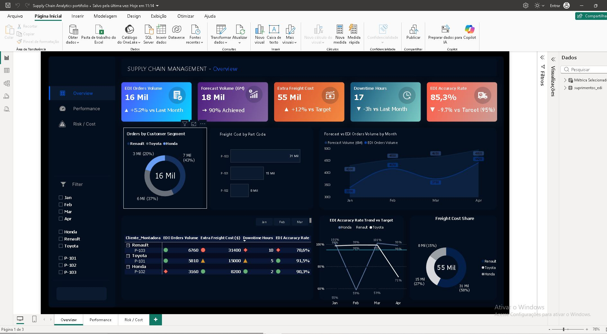
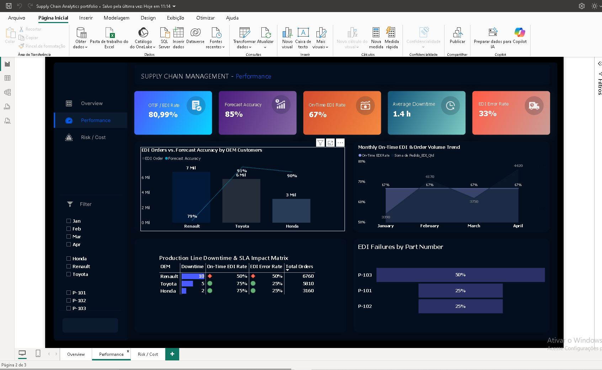
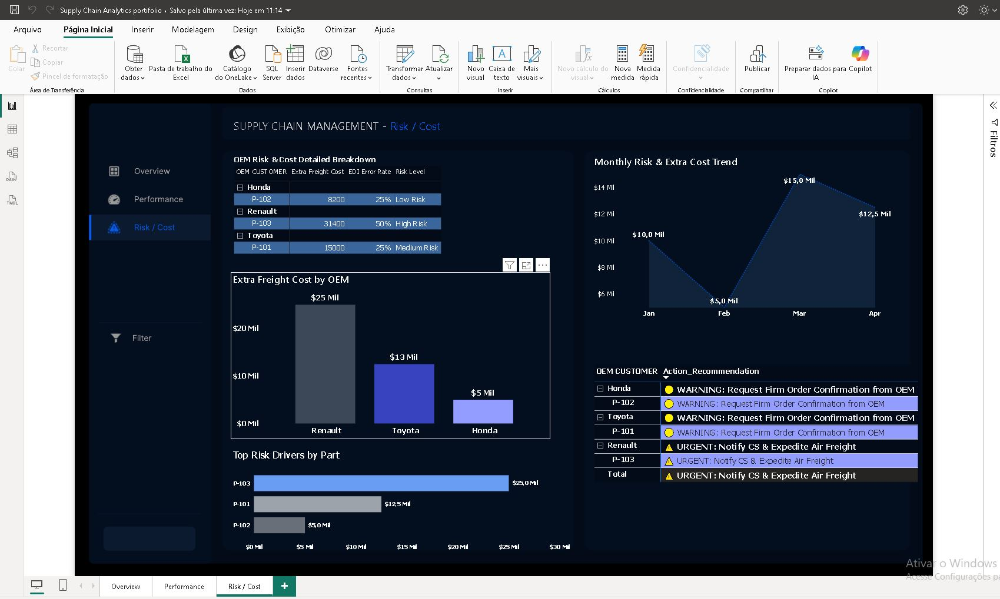

Automotive OEM Supply Chain SLA & Risk Mitigation Dashboard
Designed and deployed an enterprise-grade Power BI control tower for cross-border automotive manufacturing. The solution bridges long-term OEM demand forecasts (6–12 months) with firm EDI orders, establishing proactive risk identification and guaranteed operational compliance.


Module 2: Performance & SLA Matrix

Module 3: Risk & Cost Actionable Alerts
🎯 Strategic Objective & Business Importance
In automotive tier-1 manufacturing, supply chain disruptions trigger massive financial penalties and assembly line shutdowns. The core objective of this dashboard is to create a single source of truth connecting ERP logistics data with customer success operations, empowering executives to transition from reactive firefighting to predictive risk mitigation.
📈 Module 1: Executive Overview & Macro Pipeline
- Contents: High-level KPIs tracking total EDI order volumes, 6-month forecast accuracy, extra freight expenditures, production downtime hours, and overall SLA adherence.
- Correlation & Insights: Highlights macro trends across top global OEMs (Honda, Renault, Toyota). Correlates demand spikes with freight cost inflation, immediately revealing where budget leakages occur.
⚙️ Module 2: Performance & SLA Matrix
- Contents: Granular tracking of On-Time In-Full (OTIF) rates, monthly fulfillment curves, and part-level failure frequencies.
- Correlation & Insights: Exposes operational bottlenecks by linking specific part codes (e.g., P-101, P-102) to manufacturing downtime, ensuring immediate root-cause identification for engineering teams.
⚠️ Module 3: Risk & Cost Mitigation (Actionable Intelligence)
- Contents: Advanced DAX conditional logic generating real-time operational alerts (*URGENT*, *WARNING*, *STABLE*, *OK*), risk-cost driver matrices, and freight expense distribution.
- Correlation & Insights: Automatically flags high-deviation part orders before they impact delivery schedules, prescribing precise mitigation actions (e.g., expediting air freight or requesting firm order confirmations from OEMs) to protect company margins.